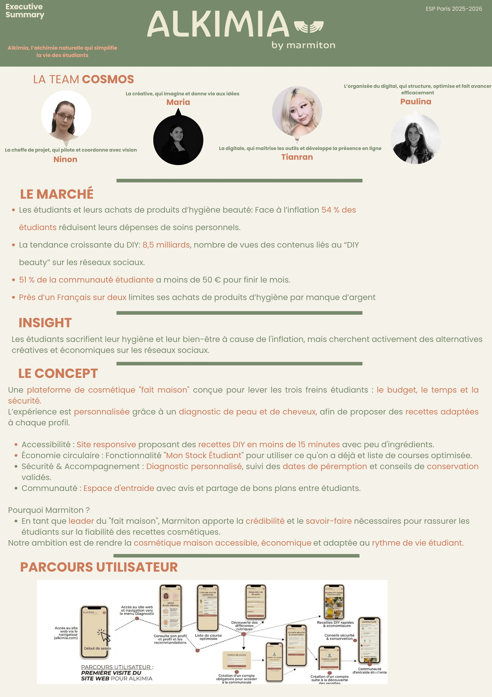
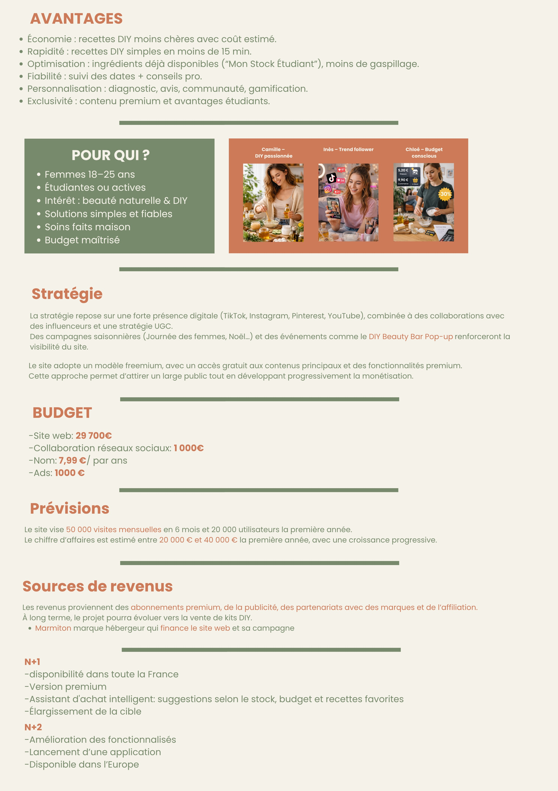

My contribution
I focused on digital strategy and online presence, translating research into audience profiles, a user journey and a multichannel launch plan.
An affordable DIY beauty concept for young adults. My focus: audience profiles, user journeys and a multichannel launch plan.
I focused on digital strategy and online presence, translating research into audience profiles, a user journey and a multichannel launch plan.
TikTok and Instagram supported discovery, while Pinterest and YouTube supported tutorials and search. The concept included personalised diagnosis, ingredient-based recipes and expiry tracking.
A student digital-product concept and go-to-market proposal—not a launched product.
Open an image at full size. Text within source images remains in its original language.


Let’s talk ideas, collaborations or a lovely little discovery.